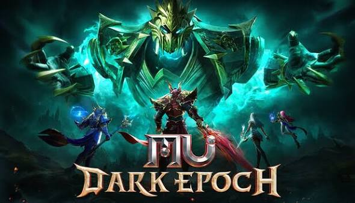

Bem-vindo ao clan Devoradores!

Mu epoch é um rpg mmo de mobile e pc que estende a franquia de jogos Mu Online, que é um jogo de MMORPG (Massively Multiplayer Online Role-Playing Game) desenvolvido pela empresa sul-coreana Webzen. O jogo é ambientado em um mundo de fantasia medieval, onde os jogadores podem criar personagens, explorar masmorras, enfrentar monstros e interagir com outros jogadores em tempo real. Mu epoch oferece uma experiência de jogo envolvente com gráficos aprimorados, mecânicas de combate dinâmicas e uma variedade de classes e habilidades para escolher.